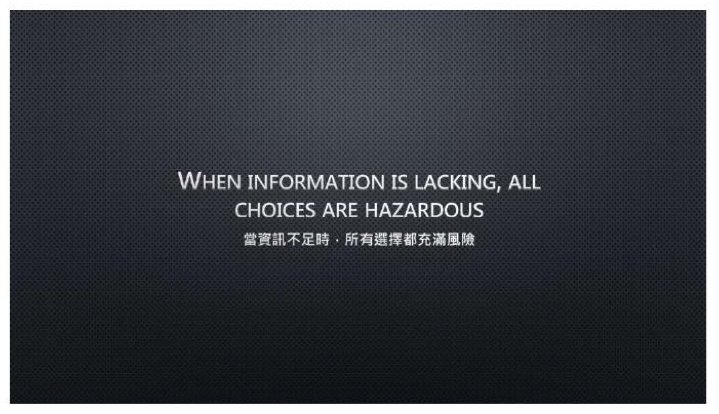
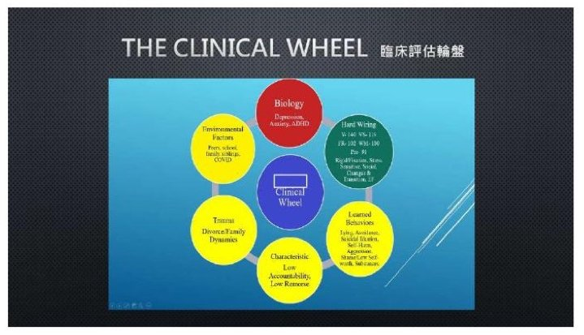
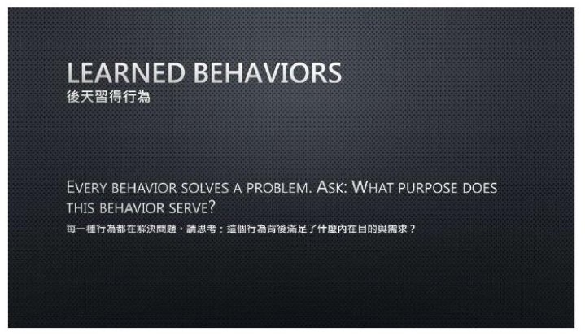
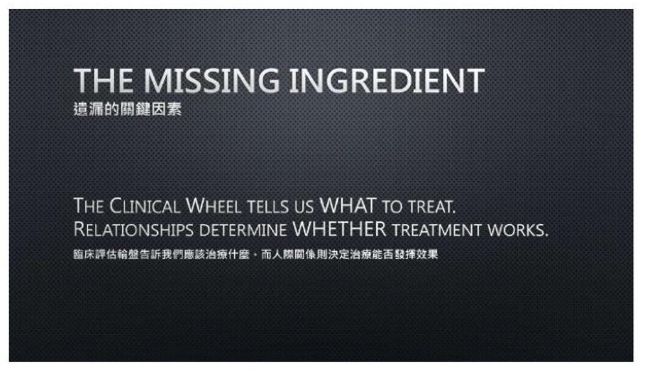

第 4 場・
神經多樣性卓越臨床照護實務
Neurodiversity Clinical Excellence
Drew Davis
美國猶他州 Telos 北校區臨床總監
同樣的診斷，可能來自完全不同的原因；先看懂，再談治療。
Drew Davis 帶來他在青少年住宿型治療機構裡使用的一個工具——臨床評估輪盤。他主張診斷相同的兩個孩子，可能需要完全不同的治療。真正在驅動困難的，往往不是診斷本身。他把青少年放在輪心，外環是六個要一起看的構面。
- 本場為英語演講，現場有逐步中文口譯。
- 講者末段加快速度，整合實踐與結語兩張投影片沒有逐頁展開。
重點整理
01理解先於治療

- 他把臨床人員的第一責任放在理解，而不是直接提供治療。
- 他以一句多年影響自己的箴言定調：資訊不足時，所有選擇都充滿風險。
- 評估是一段持續進行的好奇歷程，不是入院時做完一次就結束的程序。
- 他認為臨床卓越較少取決於知道什麼，較多取決於怎麼想：全方位評估帶來準確理解，準確理解帶來個別化處遇。
We should probably be questioning whether or not every assessment we have done is sufficient.
本盟譯我們大概應該持續追問，自己做過的每一次評估到底夠不夠。
02臨床評估輪盤

- 輪盤是幫臨床人員組織思考的實務框架，他明說它不取代既有的心理學理論或實證處遇。
- 問題從來不是某個構面存不存在，而是它對眼前這個孩子的表現占了多少比重。
- 同樣符合憂鬱診斷的青少年，背後可能是未處理的創傷、ADHD 與反覆的學業挫敗、家庭衝突或深度的社交孤立。
- 他因此換掉提問：不再只問這個人有什麼診斷，而是問什麼因素組合最能解釋他現在的狀態。
Every adolescent is influenced by all six domains
本盟譯每一位青少年，都同時受到這六個構面的影響。
03六個構面各在看什麼

- 生物學構面包含遺傳、腦部化學、身體狀況與藥物反應；他特別檢視睡眠，改善睡眠有時在任何治療技術之前就帶來明顯進展。
- 天生神經結構改變了他看孩子的方式：很多年輕人多年以為自己懶惰、沒有動機，其實是被要求在不適合自己大腦的環境裡成功。
- 後天習得行為的前提是每個行為都在解決某個問題：逃避降低焦慮、憤怒製造距離、完美主義想預防失敗。
- 創傷的紀律是雙向的——不該被忽略，也不該被當成所有表現的唯一解釋；最後一個構面是環境，沒有孩子在真空裡長大。
It reminds us that our first explanation is not always the correct explanation.
本盟譯它提醒我們，第一個浮現的解釋，不一定就是正確的那個。
04團隊、目標，與關係這最後一塊

- 每位青少年每兩週由完整治療團隊做一次個案討論，不是入院一次、出院一次，而是人還在照顧中就持續進行。
- 團隊成員包含主責治療師、直接照護人員與學術團隊，會中一起重走輪盤的六個構面。
- 模糊的目標沒辦法測量，他主張把每個目標掛到特定構面上，並寫成可以實際觀察的樣子。
- 他舉的例子是：降低情緒失調發作的頻率、提高學業作業的完成度。
現場問答
本場無現場問答記錄。
帶走的一句
Even the most accurate assessment has limited value if the adolescent does not trust the clinician.
本盟譯再準確的評估，只要青少年不信任這位臨床人員，價值都很有限。